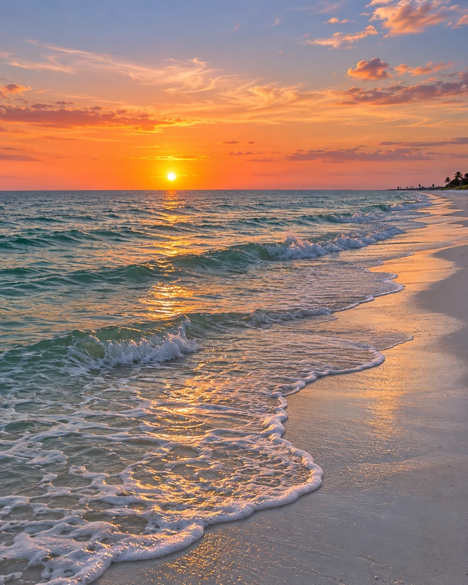

Faith & meaning
Make space for personal reflection and a different perspective on the everyday.
Explore the videos ↗Welcome to the world of Lido Mermaid. A place to pause, listen, and explore the meaning in life's unexpected moments.
A PERSONAL JOURNEY. AN OPEN INVITATION.
Known on YouTube as Lido Mermaid, Christina shares a personal exploration of faith, music, and synchronicity.
This is a starting point for that journey. Discover the channel, spend time with a video, or find a playlist that speaks to you.
Get to know the channel ↗Make space for personal reflection and a different perspective on the everyday.
Explore the videos ↗Explore the channel's playlists, including Museics In Me and Music for the Mirror Work.
Discover the playlists ↗Follow a thread of curiosity with the channel's 888 Radio Spirit Speaks Synchronicity playlist.
Explore on YouTube ↗Visit Lido Mermaid for videos, playlists, and the latest uploads. Choose a moment to watch, then follow wherever your curiosity leads.
See the latest videos ↗Subscribe on YouTube to keep up with Lido Mermaid and explore each new chapter.
Subscribe on YouTube ↗